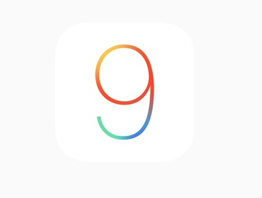
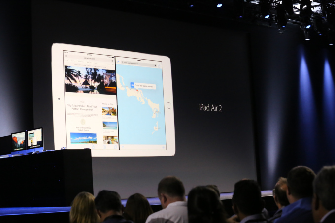
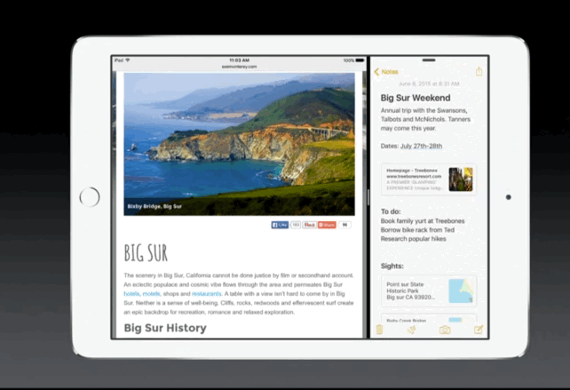
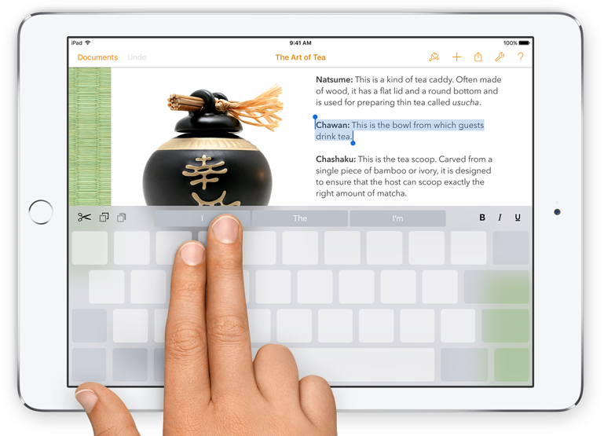
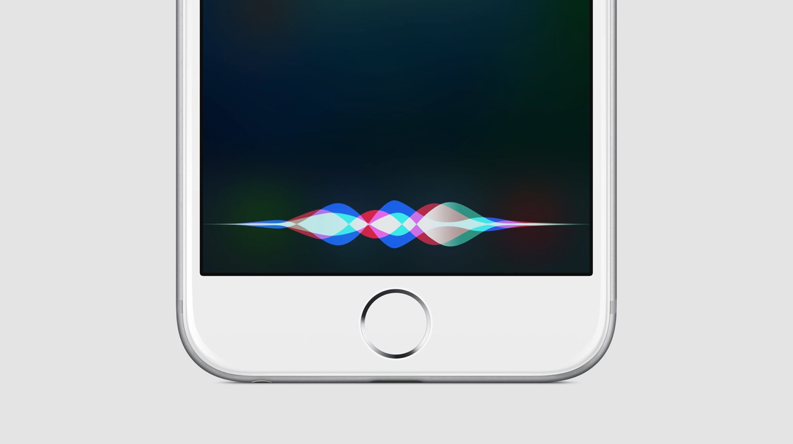
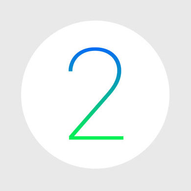
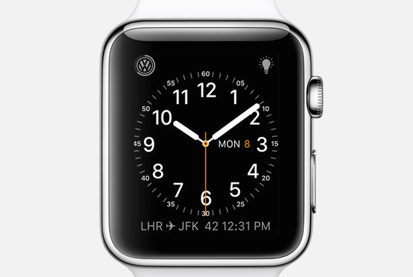
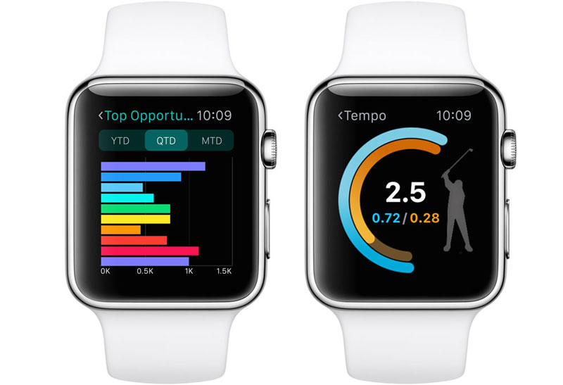
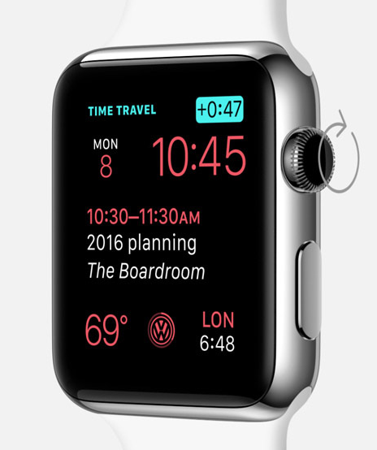
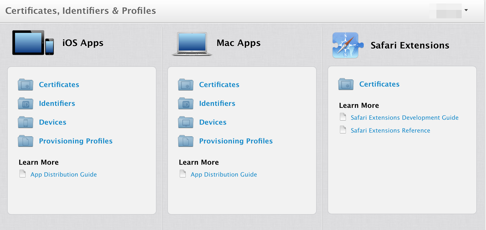

iOS9 first Impression
Just After WWDC2015
Reported by Shota Takai
WWDC2015がありました
iOS9, MacOS X 10.11, watchOS2などが発表されました。
iOS9のbeta版をiPadにインストールしたので興味ある方は触ってみてください！
iOS 9
MultiTasking
1画面にウインドウを2画面表示できるようになりました。
Split View
同時に操作することもできます。
MultiTasking
開発アイデア
- 1:1, 2:1に分割されたときの最適な画面設計は？
- メインのアプリの補助アプリみたいアプリ
- マルチウインドウで2人で対戦できるゲーム（アプリ間のデータ共有がリアルタイムにできれば、、）
MultiTasking
- Split ViewはiPad Air 2のみサポート
- Slide OverはiPad Air、Air 2、Mini 2、 Mini 3でサポート
その他気になった機能
two-finger swipe
テキスト選択が便利になりました。
メモアプリ
機能が追加されていました
- 手書き機能、リスト追加機能
- 画像のペースト
siri
デザインがかっこよくなりました
watch OS 2
コンプリケーションのカスタマイズ
App Storeにあるアプリケーションからのデータもコンプリケーション（時計表示？）として表示できるようになる
ネイティブアプリ
iPhoneが担当していた処理をApple Watch側で処理
タイムトラベル
Digital Crownを回して、過去、未来のニュースやスケジュールを確認できる
その他の機能追加
- 加速度センサー、心拍センサー、スピーカー、マイク、デジタルクラウンへのアクセスが可能に
- HealthKit、HomeKitとの連携
- メール返信、siriの機能強化
- アクティベーションロック（iCloud Apple IDアカウントでロック）
Apple Developer Program
今まで3つあったDeveloper Progarmが1つに
その他の話題
- Swift 2.0の発表、OSS化
- PassbookがWalletに名称変更、Apple Payの機能強化
- Apple Musicの発表

リリース
秋にリリースされるそうです